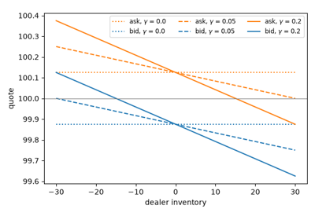
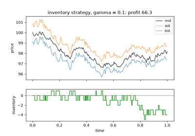
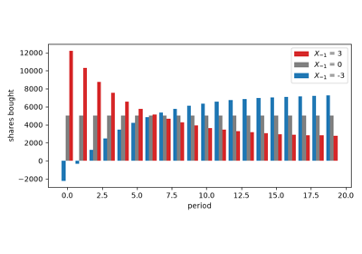
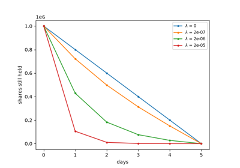
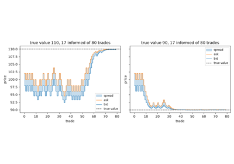
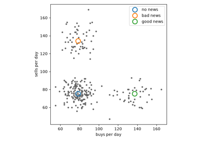
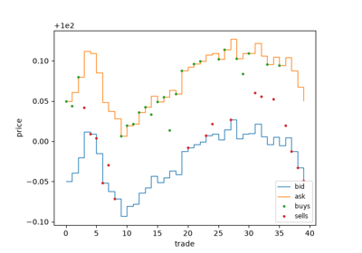
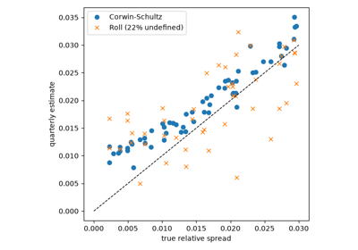

Examples#
This gallery walks through every public feature of
financialkit.market_microstructure: spread measures and estimators,
trade classification, dealer and market-making models, asymmetric
information and informed-trading measures, optimal execution and
illiquidity.
Each script in this gallery is self-contained and can be run directly with
python examples/market_microstructure/<section>/<script>.py.
Sections#
spreads – Demsetz’s spreads, Roll’s estimator, Lee-Ready trade classification and the Corwin-Schultz high-low estimator.
dealers – Garman’s Poisson dealer, Ho-Stoll inventory quotes and Avellaneda-Stoikov market making.
information – Kyle’s insider, Glosten-Milgrom, Hasbrouck’s trade-impact VAR, PIN and VPIN.
execution – the square-root impact law, Bertsimas-Lo and Almgren-Chriss.
liquidity – Amihud’s illiquidity ratio.
Dealers#
Market makers who manage order flow, inventory and risk.

Ho and Stoll: the dealer’s inventory problem

Avellaneda and Stoikov: market making in a limit order book
Execution#
The cost of trading a large order, and how to schedule it.

Bertsimas and Lo: optimal control of execution costs

Almgren and Chriss: the efficient frontier of execution
Information#
How informed traders move prices, and how to measure their presence.

Glosten and Milgrom: a spread from adverse selection alone

Easley, Kiefer, O’Hara and Paperman: the probability of informed trading
Liquidity#
Illiquidity measured from daily returns and volume.
Spreads#
The price of immediacy, measured from quotes, from trades, and from prices alone.

Demsetz: the bid-ask spread as the price of immediacy

Corwin and Schultz’s high-low spread estimator